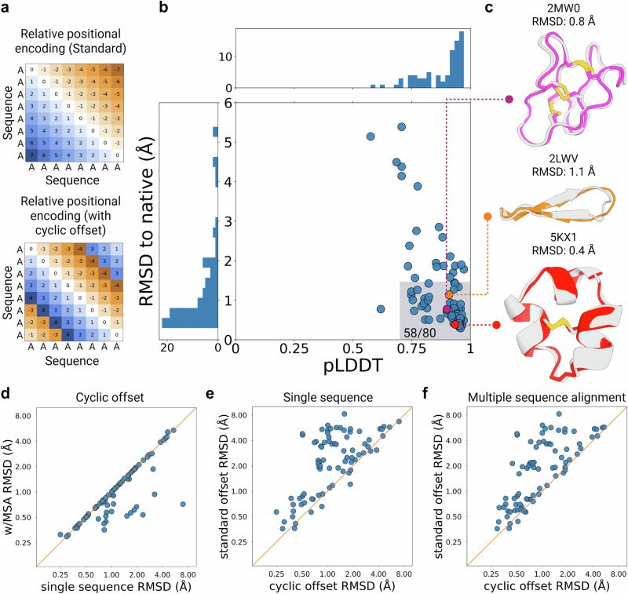
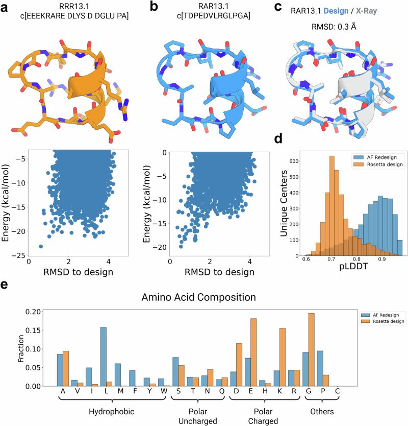
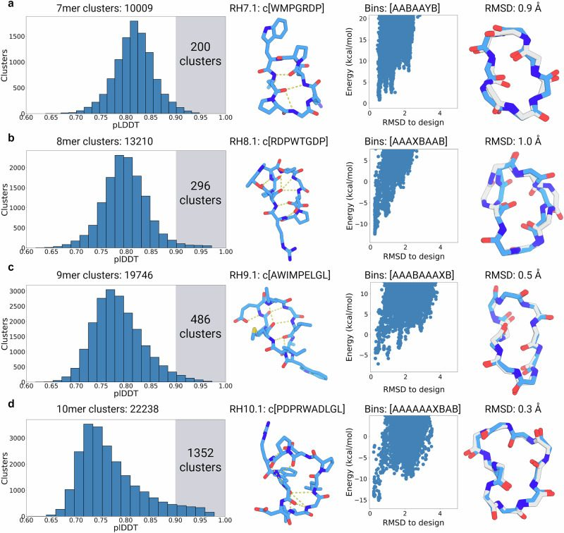

Cyclic peptide structure prediction and design using AlphaFold2
Abstract
Small cyclic peptides have gained significant traction as a therapeutic modality; however, the development of deep learning methods for accurately designing such peptides has been slow, mostly due to the lack of sufficiently large training sets. Here, we introduce AfCycDesign, a deep learning approach for accurate structure prediction, sequence redesign, and de novo hallucination of cyclic peptides. Using AfCycDesign, we identified over 10,000 structurally-diverse designs predicted to fold into the designed structures with high confidence. X-ray crystal structures for eight tested de novo designed sequences match very closely with the design models (RMSD < 1.0 Å), highlighting the atomic level accuracy in our approach. Further, we used the set of hallucinated peptides as starting scaffolds to design binders with nanomolar IC50 against MDM2 and Keap1. The computational methods and scaffolds developed here provide the basis for the custom design of peptides for diverse protein targets and therapeutic applications.
Introduction
Deep learning (DL) methods, such as AlphaFold2 and RoseTTAFold, have demonstrated remarkable accuracy in predicting the three-dimensional structure of proteins from their amino acid sequences1,2 and have now been successfully applied to predict the protein structures and protein-protein interaction networks at the proteome scale3,4. These structure prediction networks have also spurred the development of DL methods for designing proteins with diverse shapes, sizes, and functions5–11. However, these computational design studies have been primarily limited to larger proteins composed of canonical amino acids. While benchmarking studies show some applicability of these methods for predicting structures of small peptides and peptide-protein complexes12,13, different approaches are required to adapt these algorithms for designing cyclic peptides. Macrocyclization is common in biologically active natural products and therapeutic peptide discovery campaigns as it confers several structural, stability, and permeability advantages. The lack of free termini in cyclic peptides makes them more resistant to exoproteases and peptidases, and despite the lack of regular secondary structures, the cyclic constraints can lock small peptides into stable folds14,15. Macrocycles also offer opportunities to disrupt intracellular protein-protein interactions that play key roles in many biological processes and are difficult to drug with small molecules and antibodies15–17. We previously described methods for accurate computational design of peptide macrocycles using the kinematic closure (KIC) algorithm to sample cyclic peptide backbones, followed by Rosetta sequence design18,19. However, that approach is computationally expensive and requires massive sampling of cyclic backbones and sequence design to generate promising design models. Here, we sought to develop DL-based methods for rapid and accurate structure prediction and de novo design of cyclic peptides.
Unlike large native proteins, the general lack of a large training set of high-resolution structures for macrocycles makes it difficult to train a macrocycle-specific DL model from scratch. In principle, DL models can be trained on synthetic data of design models from previously described Rosetta, molecular dynamics-based approaches or quantum mechanics generated ensembles18–23. However, the accuracy and performance of such a model would be limited by the accuracy of the methods used to generate the training data. Recent work with all-atom score-based generative models has also shown reasonable success at generating conformations for small peptides; however, such models are limited to structure prediction and do not allow for the de novo design of peptide structures24. Alternatively, pre-trained networks like AlphaFold2 and RoseTTAFold can be modified to recognize macrocyclization and benchmarked to determine their accuracy at predicting cyclic protein and peptide structures. In our previous KIC-based approach, we noted that cyclic peptides are primarily composed of canonical motifs and turn types that are also common in the loop regions of larger proteins. Indeed, the Rosetta energy function, which is derived from crystal structures of large proteins, is able to correctly capture these motifs during peptide design12,18. Further, recent benchmarking studies have shown that AlphaFold2 is able to predict the structures of short peptide ligands in apo and bound states12,13,25. Therefore, we reasoned that information encoded in the AlphaFold2 network would be adequate to accurately predict and design macrocycles if cyclic constraints and a positional encoding invariant to cyclic permutations of the sequence can be enforced appropriately.
In this work, we describe an approach to encode N-to-C terminal peptide cyclization as an input positional encoding for AlphaFold2 and test the accuracy of these changes in predicting the structures for cyclic peptides available in the Protein Data Bank (PDB). We report an approach to redesign sequences of macrocyclic backbones using AlphaFold2 to improve their propensity to fold into the designed structures. Next, we describe an approach to hallucinate macrocycles from scratch by generating the sequence and structure simultaneously and enumerate the rich structural diversity of structured macrocycles between 7–13 residues. Finally, we leverage the hallucinated peptides as scaffolds for designing peptide binders to selected protein targets.
Results
Structure prediction of cyclic peptides
We set out to expand AlphaFold2 for the structure prediction of cyclic peptides by modifying the inputs for relative positional encoding. For a linear peptide, the relative positional encoding defines the sequence separation between residues, with adjacent residues having a sequence separation of 1 and the N- and C-termini separated by the length-1 of the peptide (Fig. 1a). To apply cyclic constraints, we defined and applied a custom N x N cyclic offset matrix that introduces the circularization to the relative positional encoding and changes the sequence separation between terminal residues for a peptide of length N to be one or negative one depending on the direction of the sequence (Fig. 1b). The relative positional encoding, after one-hot encoding and linear projection, is added to the pairwise feature within the evoformer module of AlphaFold2 network. Without this encoding, attention layers are permutation and order invariant. We implemented these changes in the ColabDesign framework, which implements AlphaFold2 for structure prediction and design26, and termed it AfCycDesign. We initially tested this on randomly selected cyclic peptide sequences from the Protein Data Bank (PDB) and found the outputs from these initial tests showed correct peptide bond connection and geometry of the terminal residues without introducing distortions in the rest of the peptide structure (Supplementary Fig. 1a). We next tested whether the output predictions would change if the circular permutations of a sequence were given as the inputs. The output structures for all circularly permuted sequences were very similar to each other (Supplementary Fig. 1b).

Next, we assessed the accuracy of AfCycDesign at predicting the structures of diverse cyclic peptides deposited in the PDB. We collected 80 NMR structures from the PDB composed of canonical amino acids and sequence lengths of less than 40 residues. These were not in the training set of AlphaFold2, since the training excluded NMR structures and short peptides with lengths less than 16 residues. These structures cover a broad range of topologies with diverse sizes, secondary structures, sequences, and functions (Supplementary Data 1). Notably, many of the peptides in our test set, such as diverse plant-derived cyclotides or circular knottin folds, consist of multiple cysteine residues and disulfide bonds27. The multiple possible disulfide-bond connectivities — 3 possible connectivities for four cysteines and 15 for six cysteines — posed challenges for our previous Rosetta-based methods, and disulfide connectivities had to be defined explicitly20. We predicted the structure for each sequence in the test set using AfCycDesign and evaluated two metrics: the backbone heavy atom RMSD to the experimentally determined structures and the predicted local distance difference test (pLDDT), a structure prediction confidence metric from all five output models from AfCycDesign (see Methods, Cyclic peptide design with AfCycDesign, for details). Overall, the predictions from AfCycDesign are close to the experimentally determined structures with median pLDDT and RMSD of 0.92 and 0.8 Å, respectively (Fig. 1b). In 58 out of 80 test cases, the predicted structures showed good confidence (pLDDT > 0.7) and RMSD over all backbone atoms of less than 1.5 Å to the native structures. Notably, in 55 cases where AfCycDesign predicted structures with even higher confidence metrics (pLDDT > 0.85), 80% (n = 44) were predicted correctly with backbone heavy atom RMSD to native structure less than 1.5 Å, suggesting that pLDDT scores can be used to filter for accurate predictions for cyclic peptides. Notably, the correctly predicted structures were not limited to a specific class of peptides or topology and covered diverse sizes and topologies, including disulfide-rich cyclic peptides, small cyclic β-sheets, and peptides with very short α-helical motifs (Fig. 1c). In 15 cases, the predicted structure was very close to the experimental structure (backbone RMSD < 1.5 Å), but AfCycDesign had lower confidence in those predictions (pLDDT < 0.85) (Fig. 1b). Despite there being no additional constraints placed on disulfide connectivity, correct bond connectivity was formed for most cases predicted with high confidence, which bodes well for structure prediction of knottins, conopeptides, cyclotides, and other classes of disulfide-rich peptides with many available sequences, but very few experimentally determined structures. Using single sequence instead of multiple sequence alignments (MSA) increases the speed of predictions with comparable accuracy, with 49 predictions still passing pLDDT ≥ 0.7 and RMSD ≤ 1.5 Å (Fig. 1e). In contrast, removing the cyclic offsets during single sequence or MSA-based predictions showed a decreased ability to predict the correct structures (Fig. 1f). While the aforementioned RMSD values are calculated from the model with highest pLDDT score, we also calculated the RMSD between all conformations in the NMR ensemble of native structure and all five AfCycDesign-predicted models for the given sequence (Supplementary Fig. 2). We identified seven cases where the model with the highest pLDDT did not pass our RMSD cutoff of 1.5 Å, but a structure predicted by one of the alternative four models had an RMSD < 1.5 Å to the NMR structure. In six such cases, the highest pLDDT model was close and still within 2 Å of the NMR structure (Supplementary Fig. 3). However, for one remaining case (PDB ID: 2B38), the alternative model provided a significantly improved prediction in terms of RMSD than the model with the highest pLDDT. Given that the model with highest pLDDT was not always the closest to the experimentally determined structure, we recommend evaluating all five models from AfCycDesign for any downstream tasks. However, given the high success rates (58/80 correctly predicted cases) observed even with a single model chosen based on the pLDDT (49/80), we decided to use pLDDT as our primary confidence metric for the tasks described here.
We also explored alternative versions of the cyclic offsets (Supplementary Fig. 4a) to understand the contribution of short-range vs. long-range relative positional encodings and the directionality of encodings to the overall performance at predicting cyclic peptide structures. In offset versions Type 1 and Type 2 (Supplementary Fig. 4b), we handled the directionality of long-range connections in the cyclic sequence differently based on the sign (+/−) of the offset. However, we observed similar structure prediction accuracy with both versions of the offset. Out of the 80 test cases predicted by AfCycDesign with single sequence and single recycle settings, 52 and 49 peptides were predicted close to the native structure with high confidence (RMSD ≤ 1.5 Å and pLDDT ≥ 0.7) by offset Types 1 and 2, respectively (Supplementary Fig. 4c). These data suggested that positional encodings from residues far away in the sequence space do not significantly affect the structure prediction accuracy. To test this further, we explored the offset Type 3, where relative positional encodings were provided only for the two adjacent residues, and other relative positional encodings in the offset matrix were set to the maximum distance of 32 (Supplementary Fig. 4a right panel). We observed that 48 out of the same 80 test cases were still predicted close to the native structure with good confidence, suggesting that applying a cyclic offset with relative positional encodings of adjacent residues is sufficient to correctly predict the structure of most cyclic peptides in this benchmark set. We also evaluated if the size, presence of disulfide bonds or overall compactness of the peptide affected the prediction accuracy observed with different offset types. We did not observe any considerable differences in prediction accuracy when either Type 2 or 3 offsets were used for cyclic peptides of different sizes, compactness, or containing different numbers of disulfide bonds (Supplementary Fig. 4e-g). While these offsets perform similarly at predicting structures from the benchmark set, we still recommend using Type 2 as the default as the additional information of long-range positional encoding should help with better predictions.
In addition to improved accuracy and ability to predict the structures without explicitly specifying disulfide connectivity, AfCycDesign requires considerably less compute time and resources compared to physics-based methods like Rosetta that require extensive enumeration of structure-energy landscapes (Supplementary Fig. 5a). While it varies based on the length of peptide, obtaining a structure-energy landscape for an example from the benchmark set (PDB ID: 1JBL) required the generation of 28,042 structures using 120 compute hours. In contrast, AfCycDesign requires 2 minutes on a single GPU to correctly predict the same structure (Supplementary Fig. 5b).
Sequence redesign of cyclic peptides
We next extended AfCycDesign and applied cyclic relative positional encoding for designing amino acid sequences of cyclic peptide backbones. We reasoned that such an approach would be useful in identifying amino acid sequences that improve the folding propensity for a given backbone derived either from naturally occurring peptides or generated using other backbone sampling approaches. To achieve this, we introduced cyclic offsets to the AfDesign approach previously implemented in ColabDesign. The overall goal of this approach is to find sequences predicted to fold into the desired backbone with high confidence by AlphaFold2. We start by predicting the distogram from a random sequence using the AlphaFold2 network and iteratively optimizing the sequence at each subsequent step to minimize the difference between the predicted structure at that step and the desired backbone. The sequence optimization is guided by the difference (or the categorical cross-entropy) between the predicted distrogram (a tensor that contains a binned distribution of distances for every pair of residues) and one extracted from the desired structures (Supplementary Fig. 6) (see Methods, Cyclic peptide design with AfCycDesign). This was shown to be a good proxy for maximizing the confidence of AlphaFold2 and minimizing the difference between the predicted and desired structure28.
We set out to design peptide scaffolds suitable for targeting the helix-helix interactions common at protein-protein interfaces29. We generated 457,615 backbones for 13mer cyclic peptides that all included a short seven amino acid helix using a Rosetta macrocycle design approach18. To identify all the unique shapes in this large-scale run, we clustered the resulting backbones using a torsion-based binning approach: a bin string representing the structure was generated where each amino acid was assigned a bin based on the ɸ, ψ, and ω torsion angles; bins A and B refer to the α and β regions of the Ramachandran plot, while the bins X and Y refer to the mirrored regions in the positive ɸ region of the plot. All circular permutations of a bin string were also grouped into the same structural cluster. We identified 29,249 clusters with unique bin strings and selected one backbone, RRR13.1 (representing bin sequence: AAAAAAXBYBBAB), for redesign as the Rosetta-designed sequence for the same backbone had a small energy gap (ΔE < 2 kcal/mol) in its energy landscape (Fig. 2a)18,20. The sequence designed by AfCycDesign differed significantly from the Rosetta-designed sequence, with 12 mutations in the sequence and only a singular alanine in the core of the peptide being conserved. We first evaluated the folding propensity of the AfCycDesign-generated sequence, RAR13.1, in silico by calculating the structure-energy landscape using Rosetta cyclic peptide prediction methods18,20. The AfCycDesign sequence converges to the designed structure as its lowest energy conformation with a larger energy gap (ΔE ~ 6.0 kcal/mol) between the designed structure and alternative conformations (Fig. 2a,b). To validate whether the AlphaFold2-designed sequence actually folds into the designed structure, we determined its three-dimensional structure using racemic high-resolution X-ray crystallography and compared it to the computationally designed model30. The X-ray crystal structure was very close to the design model, with Cα RMSD of 0.3 Å and 10 out of the 13 sidechain rotamers in the X-ray crystal structure matching the designed model (Fig. 2c).

Given the successful structure validation of AlphaFold2-designed RAR13.1, we decided to redesign representative peptides from the 3274 unique structural clusters, selected from our large-scale backbone sampling runs based on Rosetta energy cutoff of less than 0 kcal/mol with poly alanine (or D-alanine) sequence threaded on the backbones. In parallel, we also designed the selected backbones with Rosetta and compared them to sequences generated by AfCycDesign. As expected, the sequences designed by AfCycDesign had a better pLDDT score distribution than Rosetta-designed sequences for the same backbones (Fig. 2d). While only 63 clusters had pLDDTs > 0.9 for Rosetta-designed sequences; 1145 clusters had pLDDTs > 0.9 among sequences generated by AfCycDesign (Fig. 2d). However, we had to limit the Rosetta design approach to the canonical 20 amino acids (as was required for pLDDT calculation) instead of allowing for heterochiral design as done in our previous work18–20. In addition to comparing the structure prediction confidence metrics, we also explored the differences in amino acid composition and chemical properties for sequences designed by AfCycDesign and Rosetta. Sequences designed by AfCycDesign were generally more hydrophobic and included more prolines, compared to the Rosetta-designed sequences for the same backbones (Fig. 2e). Overall, our in silico and experimental results demonstrate that AfCycDesign can be leveraged to design sequences for cyclic peptide backbones that fold into the desired structures. More broadly, the AfCycDesign approach is complementary to other methods for peptide backbone generation and can be combined with such methods to rapidly find sequences predicted to fold correctly for a range of topologies.
De novo hallucination for cyclic peptides
We next developed a hallucination approach that simultaneously samples sequence and structure to design well-ordered cyclic peptides, and applied it to enumerate macrocyclic peptides with diverse shapes beyond the helix-containing 13mer scaffolds generated using our redesign approach. The approach is guided by losses that try to improve the prediction confidence metrics, pLDDT and predicted alignment error (PAE), and the number of intramolecular contacts (see Methods, Cyclic Peptide Design with AfCycDesign).
We started with macrocycles composed of 7–10 residues and enumerated 48,000 hallucinated models for each size. We clustered the resulting structures from these large sampling runs using torsion bin-based clustering described earlier18, and identified 10,009, 13,210, 19,746, and 22,238 unique structural clusters for 7mer, 8mer, 9mer, and 10mer cyclic peptides, respectively (Fig. 3a). Out of all the unique structural clusters, 200, 296, 486, and 1352 clusters for 7mers, 8mers, 9mers, and 10mers, respectively, had at least one member predicted to fold into the designed structure with very high confidence (pLDDT > 0.9) (Fig. 3a). Given our results on native structure prediction and redesign (Figs. 1 and 2), we expect peptides that pass this strict confidence metric cutoff of 0.9 to fold correctly into the designed structure. We selected these sequences for further in silico validation of folding propensity by an orthogonal approach relying on Rosetta cyclic peptide structure prediction methods18,20 (see Methods, Energy landscape calculation and analysis). To evaluate the folding propensity of these sequences, we calculated the Pnear values using the Rosetta cyclic peptide prediction approach18,20. Pnear values range from 0 to 1, and a value of 1 indicates that the designed structure is the single lowest energy conformation for that sequence20. Many of these hallucinated sequences demonstrated promising folding propensity in these calculations, with 123 7mers, 185 8mers, 139 9mers, and 89 10mer sequences showing Rosetta Pnear values greater than 0.6. We selected one hallucinated design model per size between 7–10 residues with AlphaFold2 pLDDT > 0.9 and Rosetta Pnear > 0.9 for experimental validation and structural characterization. All four selected designs lack regular secondary structures but are stabilized by extensive intramolecular backbone-to-backbone and backbone-to-sidechain hydrogen bonding. The design models for RH7.1, RH8.1, RH9.1, and RH10.1 feature 3, 5, 5, and 6 intramolecular hydrogen bonds, respectively (Fig. 3, second column). The overall shape of the selected models is also guided by combinations of canonical α, β, and γ turns. Design RH7.1 is composed of a type I β turn and an overlapping γ and α turn, with all turns nucleated by proline residues. Design RH8.1 includes two type I β turns stabilized by a sidechain-to-backbone hydrogen bond from the aspartate residue at i position to NH of i + 2. Design RH9.1 also contains two type I β turns separated by a pair of long range hydrogen bonds between methionine-4 and leucine-9. Design RH9.1 is notable in its hydrophobicity, with only one polar residue in the design. The sequence for RH10.1 is also significantly hydrophobic with multiple exposed nonpolar sidechains and hydrophobic packing between the tryptophan and a leucine stabilizing a region with few intramolecular hydrogen bond interactions. We also observed multiple glycines and prolines in the selected design models, with prolines providing the conformational constraints and glycines accessing the X and Y bins (ɸ angle > 0 degrees) of the Ramachandran plot.

We chemically synthesized all four selected peptides and determined high-resolution X-ray crystal structures for each of them (Fig. 3, fourth column). The X-ray crystal structure for the RH7.1 matched very closely with the hallucinated model, with a Cα RMSD of 0.9 Å between the two structures. There were only small differences between the design model and the X-ray crystal structure, with the X-ray crystal structure featuring an additional hydrogen bond from an aspartate sidechain stabilizing the type I β turn that was not present in the design model. RH8.1 structure was also close to its hallucinated model with Cα RMSD of 1.0 Å. However, the ɸ torsion at a glycine position was flipped compared to the design. The RH9.1 X-ray structure closely matches the design model with a Cα RMSD of 0.5, and the RH10.1 structure is almost identical to the design model with Cα RMSD of 0.3 Å. The sidechain rotamers in the crystal structure for RH10.1 also match the design model remarkably well, with the two leucines and the aspartate being identical. The χ1, χ2, and χ3 dihedral angles of the arginine rotamer also match well, only deviating to form a salt bridge with the aspartate.
Next, we focused on hallucinating larger macrocycles composed of 11–13 residues. In our previous attempts with Rosetta-based approaches, designing large structured macrocycles posed significant challenges and required additional disulfide crosslinks to stabilize them18. We wondered whether AfCycDesign could hallucinate macrocycles in this size range without requiring additional crosslinks. For 11mer, 12mer, and 13mer macrocycles, we identified 28,553, 27,643, and 27,330 unique structural clusters, respectively (Fig. 4, first column) from large-scale design calculations (see Methods, Energy landscape calculation and analysis). Unlike our set of 7–10 residue scaffolds that showed an increasing number of unique scaffolds as the number of residues increased, for 11–13 residue peptides the number of unique clusters does not steadily increase with size. It is likely that sampling only 48,000 scaffolds is not adequate for larger sizes and hallucinating more backbones would further increase the number of unique scaffolds for these larger sizes. This also implies that there is still significant structural space to be explored using larger hallucination runs (Supplementary Fig. 7). We had a considerable number of clusters with members predicted to fold into the designed structures with high confidence: 1846, 2861, and 3825 clusters for 11mer, 12mer, and 13mer, respectively, had members with AlphaFold2 pLDDT > 0.9. We selected one sequence with pLDDT > 0.9 and Rosetta Pnear > 0.9 for each size for experimental validation. In contrast to the smaller 7–10 residue design models, we noticed short motifs of canonical secondary structures in the selected three designs from 11–13 residues (Fig. 4, second column). Design RH11.1 contains an eight residue α-helical motif and RH12.1 and RH13.1 feature short extended β-sheets. Notably, with sequence lengths of 12 and 13 residues, both RH12.1 and RH13.1 have atypical sizes for cyclic beta strands as they are more typically favored in lengths of 6, 10, and 14 residues31. The larger structures in these selected peptides also include extensive intramolecular hydrogen bonds, with 9, 7, and 9 hydrogen bonds in the 11mer, 12mer, and 13mer design models, respectively. The short helical motif in RH11.1 is cyclized via a four-residue extended loop and features an N-terminal helix-capping motif mediated by a threonine residue (Fig. 4a, second column). RH12.1 is a short β sheet with a canonical type II’ β-turn connecting the strands on one end, and an α turn on the other end. In RH13.1, the register of the strand pairing is shifted by a cross-strand hydrogen bond from an aspartic acid sidechain to a backbone amide nitrogen, creating a twisted β-sheet cyclized at two ends by a type I β turn and an α turn, and further stabilized by hydrophobic interactions between the nonpolar sidechains (Fig. 4, second column).
We synthesized RH11.1, RH12.1, RH13.1, and their mirror images, using solid-phase chemical peptide synthesis, and determined the structures for all three peptides using racemic X-ray crystallography. High-resolution crystal structures for all three peptides matched very closely with their hallucinated models, with Cα RMSDs of 0.3, 0.4, and 0.8 Å for the RH11.1, RH12.1, and RH13.1 respectively (Fig. 4, fourth column). The turn types and hydrogen bonding patterns in the X-ray crystal structures also match closely with the design models for all three peptides. Most of the critical sidechain interactions in the designs are also observed in the X-ray structures; the two most obvious deviations being the tryptophan in RH11.1 flipping 180°, but still ring-stacking with histidine as seen in the design, and a tyrosine in RH12.1 that instead of making interactions with the backbone has rotated up to form a cation-π interaction with an arginine. Taken together, these data highlight the excellent accuracy of AfCycDesign for de novo hallucination of cyclic peptides, including larger macrocycles between 11–13 residues without requiring additional disulfide bonds to stabilize such structures as was previously proposed. More broadly, the hallucination approach and extensive structural sampling described here provide scaffolds for incorporating functions.
Next, we assessed the in silico mutational tolerance of the hallucinated cyclic peptides by performing computational site saturation mutagenesis and monitoring the changes to the confidence metrics of the predicted structures (Supplementary Fig. 8a). For the set containing 7–13 residue ‘high-confidence’ hallucinated designs (N = 10,681) we computationally mutated every residue to the 19 other canonical amino acids and predicted their structures. We focused on mutations that reduced the pLDDT of the mutated sequence significantly (a change of 0.2) compared to the starting structure. We observed that the majority (98%) of single-point mutations are tolerated well in these scaffolds, except those involving proline and glycine substitutions. Mutating glycine to beta-branched hydrophobic amino acids, valine and isoleucine, reduced the pLDDT by 0.2 or more in 9.5% and 10.8% of such mutations, respectively. The mutations that most commonly lowered pLDDT were leucine to proline: 16.1% of such mutations reduced the pLDDT by > 0.2. One surprising result was leucine to aspartate mutations that reduced pLDDT by 0.2 units in 9.8% of such mutations. Further examination of the predicted structures of such designs shows aspartate-mediated disruption of hydrophobic clusters (Supplementary Fig. 8b). Despite these small peptides not having a traditional hydrophobic core, these designed hydrophobic regions/clusters appear to be important for their in silico folding propensity.
To compare AfCycDesign-generated sequences to sequences designed by ProteinMPNN, we we also designed sequences of 22,182 10 residue hallucinated backbones using ProteinMPNN32 and compared the pLDDT of peptides designed by both methods (Supplementary Fig. 9). The number of designs re-predicted with high confidence were comparable across both methods, with 608 hallucinated sequences and 505 ProteinMPNN sequences showing pLDDTs > 0.9 (Supplementary Fig. 9a). However, AfCycDesign and ProteinMPNN excelled at sequence design for different backbones, with only 157 common backbones that were designed to a high-confidence sequence (pLDDT > 0.9) by both ProteinMPNN and hallucination (Supplementary Fig. 9b). Overall, these data suggest that there is not a considerable difference between sequence design using hallucination or ProteinMPNN for this set of cyclic peptide backbones. However, given how different backbones can be designed to high confidence using hallucination or ProteinMPNN, using both sequence design methods in parallel may achieve a higher number and diversity of high-confidence designs.
Design and validation of cyclic peptide binders using hallucinated scaffolds
We next set out to explore if AfCycDesign and the hallucinated cyclic peptides can be used to design binders for selected protein targets. To achieve this, we further modified AfCycDesign to predict or design protein-peptide complexes by applying cyclic offset to only the peptide binder chain and leaving the target chains with default positional encodings. We reasoned that the ability to predict protein-macrocycle complexes could be used to filter designed macrocyclic binders based on the confidence metrics from prediction (pLDDT, interface PAE, etc) or even design peptide binders from scratch. Here, we explored whether our set of high-confidence hallucinated peptides described above could be used as starting scaffolds for designing cyclic peptide binders to protein targets by grafting previously described binding motifs and residues on such scaffolds.
As a proof of principle, we first chose to design binders against MDM2, an established therapeutic target with multiple roles in oncogenesis, including regulating the tumor suppressor protein p5333. We reasoned that our pre-computed, high confidence hallucinated peptides with short helical segments could be ideal for grafting and mimicking the natural helix-mediated interactions between MDM2 and p53. Prior to initiating the design calculations against MDM2, we also expanded our scaffold set of hallucinated peptides to sequence lengths up to 16 residues, yielding a set of 24,104 diverse peptides predicted to fold into their design structures with high confidence (pLDDT > 0.9) by AfCycDesign. We extracted a 5-residue motif from p53 (PDB ID: 4HFZ) that covers a single α-turn containing interface with tryptophan and phenylalanine residues previously described to be key for MDM2 inhibition34. We grafted this motif on our set of hallucinated scaffolds using the MotifGraft mover from the Rosetta Software Suite (Fig. 5a)35. Post-grafting, we designed the sequence of 18,722 grafted cyclic peptides using three iterative rounds of ProteinMPNN followed by the energy minimization using the Rosetta energy function32. We fixed the sequence for the tryptophan and phenylalanine in the motif due to existing literature outlining their importance for binding to MDM2, but all other positions were redesigned. We chose ProteinMPNN for sequence design based on previously described success using this protocol for design of protein binders32. For in silico filtering of design candidates, the peptide-target complex structure was predicted using AfCycDesign. Designs were first filtered based on the PAE of the interface residues (normalized iPAE < 0.3) of which 29% passed. We further downselected to 27 designs to synthesize and test based on physics-based Rosetta metrics of interface quality, including calculated binding energy (ddG < −30 kcal/mol), spatial aggregation propensity score (SAP score < 30), and contact molecular surface area (CMS > 300), as well as increasing the stringency of the iPAE filter to less than 0.1136. Further, 11 designs were removed because the scaffold residues beyond the initial motif made minimal contacts with the interface region, or the re-predicted structure shifted away from the original motif placement.
We successfully synthesized 14 of the 16 selected cyclic peptides with sufficient yield and purity, and screened them in an AlphaLISA assay that measures the disruption of the interaction between MDM2 and a previously described ligand (Supplementary Fig. 10). In an initial screening conducted at a single peptide concentration (50 µM), 5 out of 14 designs showed greater than 50% inhibition of the MDM2-ligand complex formation. The original 5 residue motif used for grafting showed no activity up to 50 µM in the same assay (Supplementary Fig. 10b). Next, we selected three designs with best responses in the screening assay (designs RMG_14, RMG_15, and RMG_16) and determined their IC50 values in a dose-response AlphaLISA assay. The IC50 for the three selected designs ranged from 0.34-1.38 µM (Fig. 5b), with the best binder, RMG_14, exhibiting an IC50 of 338.4 nM, highlighting the ability of our pipeline to identify cyclic peptide binders to protein targets even with low-throughput testing of a small number of design candidates.
To confirm that the structure and binding mode of RMG_14 is as designed, we crystallized the MDM2-bound RMG_14 complex and determined the structure using X-ray crystallography (Fig. 5c). The 1.7 Å resolution X-ray crystal structure closely agrees with the design model, with Cα RMSD of 1.0 Å when the the structures are aligned by MDM2 and Cα RMSD is 0.8 Å when comparing the peptide alone. While the motif is important for binding, there are other residues in the design that convey internal stability as well as binding interactions to MDM2 (Supplementary Fig. 11).
Out of the five designs that showed greater than 50% activity in the initial screen, two designs (RMG_14 and RMG_16) recapitulate a FXXXWXXL motif from p53 that is critical for binding to MDM2 and is observed in other peptide binders against MDM237,38. While two of the hydrophobic residues were part of our grafted motif (FXXXW) and were kept fixed in sequence design, the placement of the leucine at the expected position in RMG_14 was designed by ProteinMPNN without any bias. RMG_15 has a methionine at this position as does RMG_13 which was the next most potent inhibitor in the screen, suggesting that long aliphatic residues are tolerated. Other designs assayed in the initial screen had similar helical motifs at this region, but either phenylalanine or isoleucine at that position, which may be causing the low- or no measured activity for these peptides in the assay. However, without experimental structural data for these peptides we cannot rule out that they were not folded as designed or failed due to other factors like solubility, aggregation, etc.
We reasoned that the high mutational tolerance of hallucinated cyclic peptide scaffolds that was observed in silico (Supplementary Fig. 9) should allow for further substitutions with canonical and non-canonical amino acids to the identified hits to improve their binding affinities. We incorporated analogs of the tryptophan (5-fluoro-tryptophan) and leucine (β-cyclobutyl-alanine), and natural amino acid substitutions M7Y39 and E5A37 in RMG_1440, as these or similar substitutions had been previously described to improve binding affinity of peptides towards MDM2. We also noticed a single glycine in the design model of RMG_14 with phi angle greater than 0° that could be mutated to a D-amino acid to improve protease stability. With G14 to D-glutamine and the other 4 substitutions, we mutated almost one third of the original sequence. Using surface plasmon resonance we observed a ~ 10–fold increase in affinity from the incorporation of these 5 mutations (Fig. 5d). Together, these findings suggest that the cyclic peptide backbones from our high-confidence scaffold set are optimizable starting points for peptide binder design.
Encouraged by our MDM2-binding peptides, we hypothesized that the broad structural diversity of our hallucinated peptide scaffolds could accommodate grafting of diverse motifs, including structures beyond the short helix used for the design of MDM2-targeting macrocycles. To test this idea, we attempted to graft 1014 “hot loops” that were previously identified to be the key contributors to loop-mediated protein-protein interactions41 on our set of 24,104 high-confidence hallucinated peptide scaffolds. Out of the 1014 hot loops, we found that 798 hot loops can be grafted on our scaffolds, with at least one cyclic peptide from the scaffold set matching a 4 residue region of the hot loop with Cα RMSD < 1 Å & dihedral RMSD < 10° (Supplementary Data 2). Post grafting, the sequence of the scaffold can be re-designed to make additional contacts with the target. While it was not experimentally feasible for us to design and test the putative binders against all 798 targets, we chose to experimentally characterize the designed binders against Keap1, a therapeutic protein target involved in oxidative and inflammatory stress responses. All hot loops and matched scaffolds are provided in Supplementary Data 2.
Keap1 is the receptor for a Cul3‐dependent ubiquitin ligase complex that recognizes and targets the transcription activator Nrf2 for degradation42. We used the hot loop from Gavenonis et al.41 with sequence DEETGE from Nrf2, trimmed it to the 4 residue EETG motif for grafting, and identified 775 scaffolds that matched the selected motif with Cα RMSD < 1 Å & dihedral RMSD < 10°. Next, we redesigned the non-grafted regions of the scaffold peptides using ProteinMPNN followed by energy-based minimization using Rosetta. We performed 3 more rounds of ProteinMPNN and energy minimization outputting each sequence yielding 4 sequences per docked scaffold. Finally, we re-predicted the structures of the macrocycle-bound Keap1 using AfCycDesign. Using stringent metrics of iPAE < 0.15 and RMSD < 1.5 Å from the output of ProteinMPNN and energy minimization, we selected 6 designs to test experimentally using a competitive fluorescence polarization (FP) assay (Fig. 6a) (see Methods, Keap1 fluorescence polarization assay). The six chosen designs come from 5 scaffolds and range in size from 12 to 13 residues. Of the five scaffolds one has a striking alpha-helical region while the others were more loop-like or extended in conformation.
We were able to synthesize 3/6 designs (KC1-6) with sufficient purity and yield and tested them alongside the 16 residue Nrf2 peptide. We found that all three 13 residue cyclic peptides were comparable or better than the linear Nrf2 peptide (Fig. 6b). KC4 was twice as potent as Nrf2 without any further optimization. Despite grafting only the 4 residue motif DEET, all three designs capture the original hot loop motif DEETGE. All three of the designs that were tested stem from unique starting scaffolds, KC3 and KC4 share the most sequence similarity (11/13 residues) with the primary difference being that KC4 has a tyrosine that extends down to the motif and donates a hydrogen bond to D1 in the motif (Supplementary Fig. 12b). This interaction may be further stabilizing the fold of the peptide and driving the superior potency observed in the FP assay compared to KC3. Given the high accuracy observed in our structural validation of the hallucinated monomers and RMG_14-bound MDM2 structure, we believe the design model alone could be used for further structure-guided optimization without the requirement of time-intensive structural characterization. KC4 has two glycine residues with positive phi torsions that could serve as ideal sites for substitutions with D-amino acids. Overall, the high-confidence hallucinated scaffolds sets and methods presented here provide a robust basis for design of macrocyclic binders to diverse protein targets.
Discussion
We report an approach to incorporate cyclic relative positional encoding in protein structure prediction networks and leverage it to develop computational methods for several key applications, including structure prediction of cyclic peptide sequences, redesigning amino acids on natural and previously-designed cyclic peptide backbones, de novo hallucination of cyclic peptides with diverse topologies, and designing cyclic peptide binders against therapeutically-relevant protein targets. Our tests with structure prediction of previously described cyclic peptides from the PDB highlight the remarkable accuracy of our approach; 58 of the 80 sequences were predicted correctly with RMSD to the native structure ≤ 1.5 Å and pLDDT ≥ 0.7. Among the designs that were predicted with high confidence (pLDDT ≥ 0.85), 80% match the NMR-detemined structures with RMSD < 1.5 Å. The accuracy of structure predictions from our approach should enable rapid and reliable structural insights for naturally occurring cyclic peptides, and enable better filtering for computationally-designed peptides expected to fold correctly into the designed structures.
We also describe a method to redesign sequences of cyclic peptide backbones, with AfCycDesign sequences showing better pLDDTs and folding propensities than sequences generated by the previously described Rosetta sequence design approach for the same peptide backbones. Comparing the AfCycDesign sequences and Rosetta-designed sequences from a large-scale redesign of 13mer cyclic peptides highlights some key differences, including increased usage of hydrophobic and conformationally-restricted amino acids by AfCycDesign. We further extended our AfCycDesign approach for hallucinating sequences and structures for cyclic peptides simultaneously and applied it to enumerate hundreds of thousands of structural clusters for peptides composed of 7–13 residues, resulting in 10,681 unique clusters that are predicted to fold into the designed structures with very high confidence (pLDDT > 0.9). X-ray crystal structures for the redesigned and hallucinated cyclic peptides show notable accuracy of our methods: All eight X-ray crystal structures (one redesigned and seven hallucinated) are remarkably close to their design models with RMSDs less than 1.0 Å. Since we solely relied on X-ray crystallography for structural validation, it is possible that designed peptides may adopt additional alternative conformations that do not crystallize and are not observed here. Notably, the hallucination approach allowed us to successfully design larger cyclic peptides between 11–13 residues that had proven difficult to design without additional crosslinks in previous attempts with state-of-the-art approaches18.
Hallucinated peptides predicted to fold into their designed structures with high confidence (pLDDTs > 0.9), and their mirror images, should serve as excellent scaffolds for incorporating functions, such as target binding and membrane traversal. To explore the capability of our scaffolds to bind protein targets, we designed and characterized binders to MDM2 by grafting a short 5-residue motif from p53 onto our hallucinated scaffolds. The X-ray crystal structure of the macrocycle-bound MDM2 matched very closely with the design model and confirms the accuracy of our macrocycle structure and binding mode. Our in silico calculations show that 798 out of the 1014 previously described hot loops can be grafted onto our set of hallucinated scaffolds and designed to bind those targets. We confirmed the feasibility of this pipeline by designing and characterizing three cyclic peptide binders to Keap1 that show IC50 < 200 nM in a competitive fluorescence polarization assay.
We previously noted the importance of L- and D-amino acid patterning for generating structured cyclic peptides18; however, the hallucinated peptides described here defy those guidelines and are well-folded despite being composed of L-amino acids only. We acknowledge the protease and metabolic stability benefits provided by D-amino acids and other non-canonical amino acids, and believe particular sites in hallucinated scaffolds can be further mutated to non-canonical amino acids. As a proof of principle, we incorporated D-amino acids and non-canonical amino acids in our MDM2 binder and demonstrated improved binding affinity over the original design. We did not measure protease or serum stability of reported designs in this work, but large-scale data from future studies on stability could also guide improvements in the sequence design and hallucination by AfCycDesign. While the current version of AfCycDesign does not allow non-canonical amino acids, it can be combined with existing physics-based methods to incorporate such amino acids in optimization of designs, as demonstrated here for MDM2 binder RMG_14c. Moreover, with recent advances in all-atom deep-learning models43,44, this work provides the basis for developing deep learning networks in the future that can incorporate a broader chemical diversity during backbone sampling and sequence design.
A focus of our current and future efforts is to improve the computational approach for hallucinating cyclic peptide binders against therapeutic targets de novo. Deep learning methods have led to large advances in therapeutic protein design over the last five years. With the computational approach presented here, similar advances can be extended to the custom design of structured cyclic peptides with high therapeutic significance.
Methods
Structure prediction
For structure prediction for the PDB test set (Fig. 1), the Colab notebook https://colab.research.google.com/github/sokrypton/ColabDesign/blob/gamma/af/examples/predict.ipynb was used with MSA, 6 recycles, random masking and all 5 models. For each of the cyclic peptides from the PDB, the highest confidence model was used based on pLDDT, and the reported RMSD is lowest of the backbone heavy atom RMSD calculated using the RMSDMetric Simple Metric from the Rosetta software suite against all members of the deposited NMR ensemble. For the comparison of different offset types (Supplementary Fig. 4) a single recycle and no random masking was used, RMSD was calculated as in Fig. 1.
Cyclic peptide design with AfCycDesign
The protocol, implemented within the ColabDesign v1.1.2 framework, is used to generate a protein sequence that either folds into a desired target backbone structure or to hallucinate a protein. Since a discrete sequence is not differentiable, we use the 3-stage design protocol that starts from a continuous representation and eventually ends with a one-hot encoded sequence. The input sequence is represented as a peptide length × 20 matrix. The sequence-matrix starts as an unconstrained and continuous set of logits and gradually becomes a normalized probability distribution using a formula that combines logits and softmax probabilities: ((1-p) * logits + p * softmax(logit/temperature)). In the first 300 iterations, the formula emphasizes logits more, but the emphasis shifts towards softmax probabilities over the iterations until a softmax distribution is achieved in stage 2. The temperature is then reduced in the next 200 iterations, approaching a one-hot encoded sequence. More specifically, p is linearly scaled from 0 to 1 in stage 1, and temperature is reduced from 1.0 to 0.01. In the third and final stage, the one-hot encoded sequence is directly optimized for 10 steps using a straight-through estimator. Throughout the optimization process, dropouts are enabled, and the model parameters are randomly selected from three models to escape local minima. In the third stage, the dropouts are disabled, and the sequence with the best loss is chosen as the final design.
For fixed backbone (fixbb) design, the categorical-cross-entropy (CCE) loss between the desired and the predicted distogram is used. For hallucination design, a combo of three losses is used. This includes 1-pLDDT + PAE/31 + con/2. pLDDT and PAE are average confidence metrics returned by AlphaFold2. The [con]tact loss was designed to maximize the number of interacting residues, designed to promote a compact structure. For peptide design, the default contact loss was modified using the following settings: (binary = True, cutoff = 21.6875, num = length, seqsep = 0). To promote structural diversity, we initialize the sequence with a random Gumbel distribution. The first 50 steps of optimization are primed with softmax activation and temperature of 1.0. Standard offset matrix is used for the relative positional embedding. The cyclic offset is then enabled, sequence is initialized with the softmax(logits), and the 3-stage protocol, with schedule of (stage1 = 50, stage2 = 50, stage3 = 10), is run to get the final one-hot sequence.
Energy landscape calculation and analysis
Energy landscape calculations for cyclic peptides were done using Rosetta simple_cycpep_predict application18–20. Large-scale conformational sampling during these calculations was conducted using the BOINC Rosetta@Home platform. Energy for each sampled conformation was calculated using the Rosetta REF2015 energy function45,46. The folding propensity was evaluated based on the energy gap between the design conformation and alternative conformations, and by calculating Pnear, a Rosetta metric that looks at the quality of energy ‘funnel’. Pnear value of 1 denotes energy landscapes with a funnel that converges to the designed model as its single low-energy minima; 0 denotes energy landscapes with one or more alternative conformations as energy minima that are different from the designed conformation.
Peptide synthesis and purification
Macrocyclic peptides were purchased from Wuxi AppTec at greater than 90% purity or synthesized in-house by manual Fmoc-based solid-phase peptide synthesis at 0.2 mmol scale. 300 mg of 2-Cl-Trt resin purchased from Anaspec was transferred to a 10 ml Torviq disposable reaction vessel and swelled for 1 hour in dichloromethane (DCM). Linear peptide synthesis was initiated on glycine residues found in the sequences, 0.2 mmol of Fmoc-Glycine-OH in 5 ml of DCM with 300 μl of 2,4,6-collidine (2.3 mmol) was incubated overnight with the resin. The resin was drained and washed 3X with DCM followed by capping with 5 ml of a 17:2:1 mixture of DCM:methanol:DIEA (N,N-Diisopropylethylamine, 1.4 mmol) for 1 hour. After capping, the resin was washed 3X with DCM and 3X with N,N-Dimethylformamide (DMF) and subjected to repeated 20 minute deprotections with 20% piperidine in DMF followed by 3X washes with DMF and 20 minute couplings with 5 eq of Fmoc protected amino acid mixed with 5 eq of PyAOP ((7-Azabenzotriazol-1-yloxy)trispyrrolidinophosphonium hexafluorophosphate, 1 mmol) and 10 eq of DIEA (2 mmol) dissolved in DMF. After removal of the terminal Fmoc group, the protected peptide was released from the resin by repeated 5 ml washes of 2% TFA (trifluoroacetic acid, 3 mmol) in DCM that were deposited in a round bottom flask containing a 50:50 mixture of water and acetonitrile. DCM was removed from the mixture by rotary evaporation and the resulting protected peptide, now in water and acetonitrile, was lyophilized to dryness. The dry peptide was dissolved in 50 ml of DCM with 2 eq of PyAOP (0.4 mmol) in a round bottom flask with a stir bar and left to stir for 10 minutes. 3 eq of DIEA (0.6 mmol) was added dropwise and the solution left overnight. DCM was removed by rotary evaporation leaving an oil-like solution in the round bottom flask. To remove the protecting groups, 20 ml of TFA:water:triisopropylsilane:3,6-Dioxa-1,8-octane-dithiol (92.5:2.5:2.5:2.5), (TFA: 60 mmol, triisopropylsilane: 2.4 mmol, 3,6-Dioxa-1,8-octane-dithiol: 3.1 mmol) was added and the mixture left stirring for 3 hours. The deprotected peptide was concentrated by rotary evaporation, precipitated in cold diethyl ether, and dried under air stream. Peptides were purified on an Agilent Infinity 1260 HPLC using 1% per minute gradient on Agilent ZORBAX 300SB-C18, 5 μm, 9.4 × 250 mm column with a gradient of solvent A: 0.1% TFA in water, and solvent B: 0.1% TFA in acetonitrile.
Liquid chromatography mass spectrometry
Intact mass spectrometry was performed on an Agilent 6230B TOF LC/MS with gas temp 325 °C, drying gas 10 l/min, nebulizer 50 psi, sheath gas temp 350 °C, sheath gas flow 11 l/min, fragmentor 225 V, and skimmer 70 V. Analytical liquid chromatography was performed on an Agilent Infinity 1260 HPLC using 2% per minute gradient on Higgins Analytical Proto 300 C18 with a gradient of solvent A: 0.1% TFA in water, and solvent B: 0.1% TFA in acetonitrile.
X-ray crystallography
Crystal diffraction data were collected from single crystals at synchrotron (on APS 24ID-C) and at 100 K. Unit cell refinement and data reduction were performed using XDS and CCP4 suites47,48. The structure was identified by direct methods using SHELXT49. Structures were refined by full-matrix least-squares on F2 with anisotropic displacement parameters for the non-H atoms using SHELXL-2018/349. Structure analysis was aided by using Coot/Shelxle50,51. The hydrogen atoms on heavy atoms were calculated in ideal positions with isotropic displacement parameters set to 1.2 × Ueq of the attached atoms. All structures were deposited in CSD/CCDC (The Cambridge Structural Database/Cambridge Crystallographic Data Centre).
MDM2 (20 mg/ml) and macrocycle RMG_14 were mixed in 1:2 molar ratio and incubated for 30 min at room temperature. Upon addition of the RMG_14 to the protein, we observed some precipitation. Crystallization experiments for the MDM2-binder complex were conducted using the sitting drop vapor diffusion method. Initial crystallization trials were set up in 200 nL drops using 96-well crystallization plates. Crystal drops were imaged using the UVEX crystal plate hotel system by JANSi. Diffraction quality crystals for the complex appeared in 30% w/v polyacrylate 5100, sodium salt, 10% ethanol and 0.1 M MES-NaOH.
Diffraction data were collected at the NSLS2 beamline AMX/FMX (17-ID-1/17-ID-2). X-ray intensities and data reduction were evaluated and integrated by XDS47 and merged/scaled by Pointless/Aimless in the CCP4i2 program suite48. The X-ray crystal structure was determined by molecular replacement using the designed model for phasing by Phaser52. Next, the structure obtained from the molecular replacement was improved and refined by Phenix53. Model building was performed by Coot50 in between the refinement cycles. The final model was evaluated by MolProbity54. Data collection and refinement statistics were reported in Supplementary Table 1. Final atomic coordinates, mmCIF, and structure factors were deposited in the Protein Data Bank (PDB) with accession codes 9CDZ.
MDM2 peptide binder design
Backbone atom coordinates for the 5 residue motif FSDLW from p53 in PDB: 4HFZ were used for MotifGrafting onto an expanded hallucinated residue set containing peptides from 7–16 residues in length35. A tolerance of 1.0 Å RMSD was used to identify scaffolds that could be grafted with the motif. Successful grafts were redesigned using ProteinMPNN to obtain a single sequence, with the phenylalanine and tryptophan from the motif fixed. AfCycDesign was used to predict the complex of MDM2 and designed cyclic peptides from single sequences. No template was provided for the designed peptide during these target-peptide complex predictions. Designs with iPAE scores less than 0.3 were scored using Rosetta metrics, such as DdgFilter (< −30), SapScoreMetric (< 35), and ContactMolecularSurface (> 300)36. A final cutoff for iPAE of 0.11 was applied to select 27 peptides that were manually inspected and 11 were removed due to the added residues from the scaffold not interacting at the MDM2–p53 interface, leaving 16 peptides for chemical synthesis and experimental testing.
MDM2 competition assay
Binding of designed cyclic peptides to MDM2 was determined using PerkinElmer HTRF Human MDM2 Binding kit (Part number: 64BDMDM2PEG) as directed. In this assay AlphaLISA streptavidin donor and glutathione acceptor beads are coated with biotinylated human MDM2 and GST-tagged MDM2 ligand respectively. Excitation of the donor beads at 680 nm generates singlet state oxygen that leads to emission at 615 nm from the acceptor beads that are nearby due to MDM2 binding the MDM2 ligand. Introduction of a competitor for this interaction prevents emission at 615 nm. All measurements were made in triplicate. Peptides were dissolved in dimethyl sulfoxide (DMSO) and diluted in the assay buffer to 50 μM with 5% DMSO for the single-point screening assay. IC50 determination was performed starting with 10 mM DMSO stocks for the peptides; DMSO concentration in the assay was at 2%. GraphPad Prism 10 was used to plot the data and calculate IC50 values.
Keap1 fluorescence polarization assay
The inhibitory effects of KC3, KC4, KC5 and the Nrf2 peptide were assessed using BPS Bioscience Keap1-Nrf2 Inhibitor Screening Assay Kit (Part number: 72020). Samples were serially diluted from 100 µM to 1.5 nM in the provided assay buffer, ensuring a final DMSO concentration below 1%. In a black 96-well round-bottom plate supplied in the kit, 5 µL of each diluted sample was mixed with 0.5 µL of 1 µM Nrf2 peptide and 20 µL of 15 ng/µL Keap1 protein. All measurements were made in duplicate. After a 30 min incubation at room temperature, fluorescence polarization was measured using a BioTek Synergy Neo2 microplate reader (Agilent, USA), set to an excitation wavelength of 485 nm and an emission of 528 nm with filter cube 108. The gain was auto-adjusted to mid-range relative light units (RLU) based on the positive control. Fluorescence intensity measurements, both parallel and perpendicular, were subtracted by the blank measurement and corrected by a G-factor of 0.87, specific to perpendicular detection on the Neo2. The % inhibitory activity was calculated as follows:
IC50 values were derived using non-linear regression analysis in GraphPad Prism 8, fitted with a four-parameter logistic model.
References
- Highly accurate protein structure prediction with AlphaFold Nature 2021 doi
- Accurate prediction of protein structures and interactions using a three-track neural network Science 2021 doi
- Highly accurate protein structure prediction for the human proteome Nature 2021 doi
- Computed structures of core eukaryotic protein complexes Science 2021 doi
- Scaffolding protein functional sites using deep learning Science 2022 doi
- De novo protein design by deep network hallucination Nature 2021 doi
- Hallucinating symmetric protein assemblies Science 2022 doi
- Moffat, L., Greener, J. G. & Jones, D. T. Using alphafold for rapid and accurate fixed backbone protein design. bioRxiv10.1101/2021.08.24.457549 (2021).
- Jendrusch, M., Korbel, J. O. & Kashif Sadiq, S. AlphaDesign: A de novo protein design framework based on AlphaFold. bioRxiv10.1101/2021.10.11.463937 (2021).
- De novo design of protein structure and function with RFdiffusion Nature 2023 doi
- De novo design of protein interactions with learned surface fingerprints Nature 2023 doi
- Benchmarking AlphaFold2 on peptide structure prediction Structure 2023 doi
- Harnessing protein folding neural networks for peptide-protein docking Nat. Commun. 2022 doi
- Macrocyclic peptides as drug candidates: recent progress and remaining challenges J. Am. Chem. Soc. 2019 doi
- Trends in peptide drug discovery Nat. Rev. Drug Discov. 2021 doi
- Cyclic and macrocyclic peptides as chemical tools to recognise protein surfaces and probe protein-protein interactions ChemMedChem 2016 doi
- Peptide therapeutics: targeting the undruggable space Eur. J. Med. Chem. 2015 doi
- Comprehensive computational design of ordered peptide macrocycles Science 2017 doi
- Accurate de novo design of membrane-traversing macrocycles Cell 2022 doi
- Accurate de novo design of hyperstable constrained peptides Nature 2016 doi
- Understanding and designing head-to-tail cyclic peptides Biopolymers 2018 doi
- Structure prediction of cyclic peptides by molecular dynamics + machine learning Chem. Sci. 2021 doi
- CREMP: Conformer-rotamer ensembles of macrocyclic peptides for machine learning Sci. Data 2024 doi
- Direct conformational sampling from peptide energy landscapes through hypernetwork-conditioned diffusion Nat. Mach. Intell. 2024 doi
- Bryant, P. & Elofsson, A. EvoBind: in silico directed evolution of peptide binders with AlphaFold. bioRxiv10.1101/2022.07.23.501214 (2022).
- ColabFold: making protein folding accessible to all Nat. Methods 2022 doi
- Circular proteins–no end in sight Trends Biochem. Sci. 2002 doi
- State-of-the-art estimation of protein model accuracy using AlphaFold Phys. Rev. Lett. 2022 doi
- Protein-protein interactions: a review of protein dimer structures Prog. Biophys. Mol. Biol. 1995 doi
- Racemic protein crystallography Annu. Rev. Biophys. 2012 doi
- Unusual beta-sheet periodicity in small cyclic peptides Nat. Struct. Biol. 1998 doi
- Robust deep learning-based protein sequence design using ProteinMPNN Science 2022 doi
- Inhibiting the p53-MDM2 interaction: an important target for cancer therapy Nat. Rev. Cancer 2003 doi
- The structure of an MDM2-Nutlin-3a complex solved by the use of a validated MDM2 surface-entropy reduction mutant Acta Crystallogr. D Biol. Crystallogr. 2013 doi
- Silva, D.-A., Correia, B. E. & Procko, E. Motif-driven design of protein–protein interfaces. In Computational Design of Ligand Binding Proteins (ed. Stoddard, B. L.) 285–304 (Springer New York, New York, NY, 2016).10.1007/978-1-4939-3569-7_1727094298 doi
- Design of protein-binding proteins from the target structure alone Nature 2022 doi
- Systematic mutational analysis of peptide inhibition of the p53-MDM2/MDMX interactions J. Mol. Biol. 2010 doi
- Stapled α−helical peptide drug development: a potent dual inhibitor of MDM2 and MDMX for p53-dependent cancer therapy Proc. Natl. Acad. Sci. USA 2013 doi
- Design of a novel MDM2 binding peptide based on the p53 family Cell Cycle 2009 doi
- Design-rules for stapled peptides with in vivo activity and their application to Mdm2/X antagonists Nat. Commun. 2024 doi
- Comprehensive analysis of loops at protein-protein interfaces for macrocycle design Nat. Chem. Biol. 2014 doi
- Structure of the keap1:Nrf2 interface provides mechanistic insight into Nrf2 signaling EMBO J 2006 doi
- Generalized biomolecular modeling and design with roseTTAFold all-atom Science 2024 doi
- Accurate structure prediction of biomolecular interactions with AlphaFold 3 Nature 2024 doi
- Simultaneous optimization of biomolecular energy functions on features from small molecules and macromolecules J. Chem. Theory Comput. 2016 doi
- The rosetta all-atom energy function for macromolecular modeling and design J. Chem. Theory Comput. 2017 doi
- Acta Crystallogr. D Biol. Crystallogr. 2010 doi
- Overview of the CCP4 suite and current developments Acta Crystallogr. D Biol. Crystallogr. 2011 doi
- Crystal structure refinement with SHELXL Acta Crystallogr. C Struct. Chem. 2015 doi
- Coot: model-building tools for molecular graphics Acta Crystallogr. D Biol. Crystallogr. 2004 doi
- ShelXle: a Qt graphical user interface for SHELXL J. Appl. Crystallogr. 2011 doi
- Phaser crystallographic software J. Appl. Crystallogr. 2007 doi
- PHENIX: a comprehensive python-based system for macromolecular structure solution Acta Crystallogr. D Biol. Crystallogr. 2010 doi
- MolProbity: More and better reference data for improved all-atom structure validation Protein Sci. 2018 doi
- Matplotlib: A 2D graphics environment Comput. Sci. Eng. 2007 doi